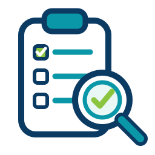
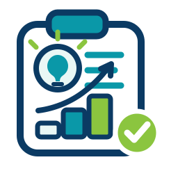

01
スポット
業務を整理する60〜90分の業務棚卸し診断
いまの業務を一緒に洗い出し、AIで楽になる部分・手をつけない方がよい部分を切り分けます。最初の一手が決まります。
改善できる業務をご提示できなければ、全額返金します。
1〜2万円 ／ 1回
静岡県東部 ／ 中小事業者・士業・NPOへ
問い合わせ対応・予約受付・ホームページ、見積やメール、自社様式の書類——散らばった業務を整理して、あなたの業務にちょうどのしくみに。既製ソフトに合わせるのではなく、AIで早く・安く。
業務を聞き、使える形にして、現場で回るところまで、鈴木が担当します。
静岡県東部（沼津・三島・裾野・富士・御殿場）を中心に伴走します。
無料・30分・オンライン
フォームでのお問い合わせは こちら。「相談だけ」でも歓迎です。
01 課題
毎日のようにAI活用の情報が流れてくる。「便利らしい」はわかる。でも、いざ自分の会社の業務に落とし込もうとすると、手が止まってしまう——。
自分の会社の業務に、AIの何がどう使えるのかが分からない。
重い腰を上げてコンサルに相談したら「では数百万円でプロジェクトを」と言われた。
費用をかけてツールを導入したのに、2週間後には誰も使っていなかった。
これは能力の問題でも、意欲の問題でもありません。「気軽に相談できる人がいない」という、構造的な問題です。
対象になりやすい方：小規模事業者、士業・個人事務所、NPO・地域団体の事務局、医療・介護・福祉系の小規模組織。
02 AI実装Labとは
やることは3つです。業務を聞き、その場で形にし、自分たちで使える状態にする。この3つを、鈴木がひとりで担当します。
AI実装Labがやること
FDE（Forward Deployed Engineer）——コンサルタントとエンジニアを兼ね、現場に入って実装まで行う働き方です。AI実装Labは、この働き方を地域の小さな組織に届けます。
| 大手コンサル | 受託開発・SES | AI実装Lab | |
|---|---|---|---|
| 実装（コードを書く） | × | ○ | ○ |
| 業務そのものの理解 | ○ | △ | ○7年の実務経験 |
| 支援の終わり方 | 提案書を渡して終了 | 納品・検収で終了 | 使われて成果が出るまで。 最終的に自走できる状態まで |
動いて、使われて、成果が出るまで、一緒にいます。
そして、ゴールは「ずっと頼られること」ではありません。最終的にご自身のチームで回せるようになること——伴走の出口は、自走です。
03 サービス
3段階に分けています。まず業務を整理し、1つだけ変えてみて、必要な会社だけ続ける。順番に進めても、途中でやめても構いません。
いまの業務を一緒に洗い出し、AIで楽になる部分・手をつけない方がよい部分を切り分けます。最初の一手が決まります。
改善できる業務をご提示できなければ、全額返金します。
1〜2万円 ／ 1回
見積書・議事録・報告書・案内文など、いま一番時間を取られている1業務を、実際に使える形にします。
3〜8万円 ／ 1業務
チャットでの随時相談＋月1〜2回のオンラインMTG＋軽微な改善。続けるかどうかは、成果を見てから決めていただけます。
1.5〜3万円 ／ 月
もっと大きな「専用システム」（複数業務をつなぐしくみ、小型システム、ウェブ・アプリ開発など）も、これまでより早く・安く。規模に応じて個別にお見積りします。
お客様に選んでいただくものではありません。お聞きした業務に応じて、こちらで使い分ける道具です。
手段は今後も増えていきます。目的をお聞きしてから、必要なものだけ選びます。
04 支援シナリオ
「作業」に消えていた時間を、本来の仕事に戻す。AI実装Labが目指すのは、この当たり前の変化です。以下は、ご相談の入口としてよくある業務の型です。
Case 01 — 小規模NPO・公益法人の事務局
想定ケース毎月の助成金報告書・議事録作成に2日かかり、本来の事業に使う時間が圧迫されている。
議事録から報告書を自動生成するワークフローを構築。「こんな簡単にできたんですね」が最初の一言。
Case 02 — 小規模事業者の見積書・書類作成
想定ケース見積書・仕様書を毎回一から書き直し。1件あたり2〜3時間を消費している。
AI補完とテンプレートで20分完成。浮いた時間で商談に集中できるようになった。
Case 03 — 個人事業主のリサーチ・提案資料
想定ケースクライアントへの提案資料作成・情報収集に週8時間かかっている。
リサーチ自動化とドラフト生成で週2時間に。浮いた6時間を顧客との関係づくりへ。
代表自身の実績
実測値自身の調査業務に週10時間。「自分でやらないといけない」が当たり前になっていた。
AIエージェント・自動化ワークフローを構築し、週3時間に短縮。実装で得た知見をそのまま支援に活かしている。
05 料金の目安
いずれも目安です。実際の料金は、業務の内容と規模をお聞きしてからご提示します。
月次伴走サポート
1.5〜3万円 ／ 月
チャット相談＋月1〜2回のMTG＋軽微な改善。継続的に伴走します。
スポット（1業務の改善〜小型実装）
3〜15万円
1業務の改善（3〜8万円）から、複数業務の整備・小型システムまで。規模に応じます。
Web制作・LINE活用・アプリ開発
個別見積
内容・規模に応じてお見積りします。
なぜ無料・返金保証なのか。 開業して間もないAI実装Labにとって、お客様の業務を深く知ること自体が、次の支援をつくる糧になるからです。こちらが受け取るものがある以上、リスクをお客様に負わせる理由がありません。だからその30分は、こちらも本気で使います。
06 代表プロフィール
鈴木 秀 AI実装Lab 代表
行政・政策・NPOの現場で7年、書類と作業に追われる人をずっと見てきました。AIで一番救えるのは大企業ではなく、少人数で全部を抱えている地域の現場だと考えています。だから沼津で、この事業を始めました。
行政 ／ 3年
静岡県職員
行政実務・政策立案に従事。
政策シンクタンク ／ 4年
日本医療政策機構（HGPI）
医療政策リサーチ・提言書作成・助成金申請・国際イベント運営。
現職
コミナスしずおか 理事長
法人運営・助成金申請・会計処理の実務。
Tech Stack
行政・政策・法人運営の現場で7年。その業務を、AIエージェント・RAGシステムの構築で自動化してきました。「業務を経験した人間が、AIでその業務を自動化する」——これがAI実装Labの強みです。
07 データの取り扱い
01
利用する外部AIサービス（API）を事前に明示し、ご合意のうえで利用します。
02
ご希望に応じて秘密保持契約（NDA）を締結します。事業情報は厳重に取り扱います。
03
お預かりしたデータの保存範囲・削除方針を、作業前に取り決めます。
08 ご支援の流れ
いま困っている業務をヒアリングし、AIで効果が出そうな箇所を一緒に整理します。Zoom / Google Meet のお好きな方で。

業務を棚卸しし、改善できる課題と「最初の1手」をご提示します。成果がなければ全額返金します。

ご納得いただいた実装メニューだけを選んで開始します。無理な提案はしません。
相談だけでも歓迎です。提案・営業は一切しません。
09 よくある質問
相談前に多くいただく質問をまとめました。ここに無いことも、遠慮なくお尋ねください。
むしろ、詳しくない方が対象です。AI実装Labは「詳しい人向けの支援」ではなく、「詳しくないまま成果を出す」ための支援です。専門用語は使わず、いま困っている業務の話から進めます。設定や操作もこちらで実装します。
はい。少人数の組織ほど、事務作業が特定の人に集中しているため効果が出やすいです。個人事業主の方、士業の個人事務所、NPO・地域団体の事務局も対象です。
ご相談・ご支援はオンライン（Zoom / Google Meet）で全国対応が可能です。訪問を伴う支援については、沼津・三島・裾野・富士・御殿場を中心とした静岡県東部が中心となります。
そうならないための伴走です。実装して納品した時点ではなく、現場で実際に使われて成果が出るところまでご一緒します。そして最終的には、ご自身のチームで回せる状態になることがゴールです。
ご不安はもっともです。データの取り扱いに3つの約束を明記しています。①利用する外部AIサービス（API）は事前に明示し、ご合意のうえで利用します。②ご希望に応じて秘密保持契約（NDA）を締結します。③お預かりするデータの保存範囲・削除方針は、作業前に取り決めます。
「何から始めればいいか分からない」状態こそ歓迎です。整理してから来ていただく必要はありません。いま面倒だと感じている業務を話していただくところから始めます。整理はこちらの仕事です。
提案・営業は一切しません。初回30分のオンライン相談は無料です。相談だけで終わっていただいて構いませんし、その方が良いと判断すれば「いまは不要です」とお伝えします。
3段階の目安は、①業務棚卸し診断が1〜2万円、②1業務の改善が3〜8万円、③月次伴走サポートが1.5〜3万円／月です。複数業務の整備や小型システムを含むスポットのご依頼は3〜15万円、ウェブ・アプリ開発は内容と規模に応じた個別見積となります。初回診断は、改善できる業務をご提示できなければ全額返金します。詳しくは料金の目安をご覧ください。
10 お問い合わせ
「まだ検討段階」でも「何から始めればいいか分からない」でも歓迎です。30分後には、自社の業務でどこから手をつければいいかが明確になります。
予約やLINEが使いにくい場合は、こちらからでもご連絡いただけます。1〜2営業日以内にご返信します。
またはメールで直接：
shu.suzuki.numazu@ss-po.com